Eerst een tekening. Dan pas inkt.
Ik ben Jean, en ik teken al zolang ik me kan herinneren. Jouw tattoo begint bij mij altijd op papier: we zitten samen, we schetsen, en pas als het ontwerp echt van jou is, gaat de naald aan.
op Google, 19 reviews
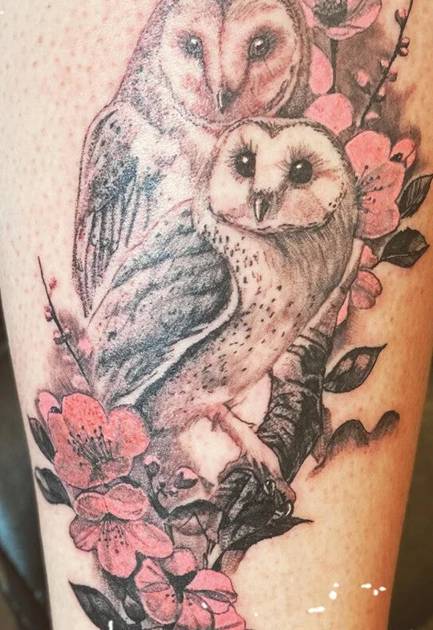
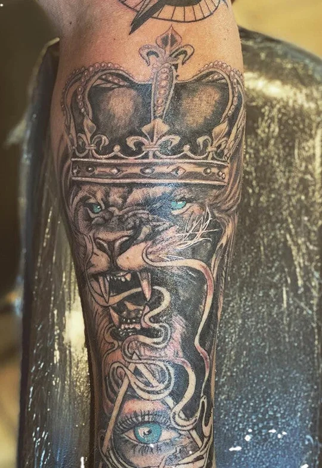
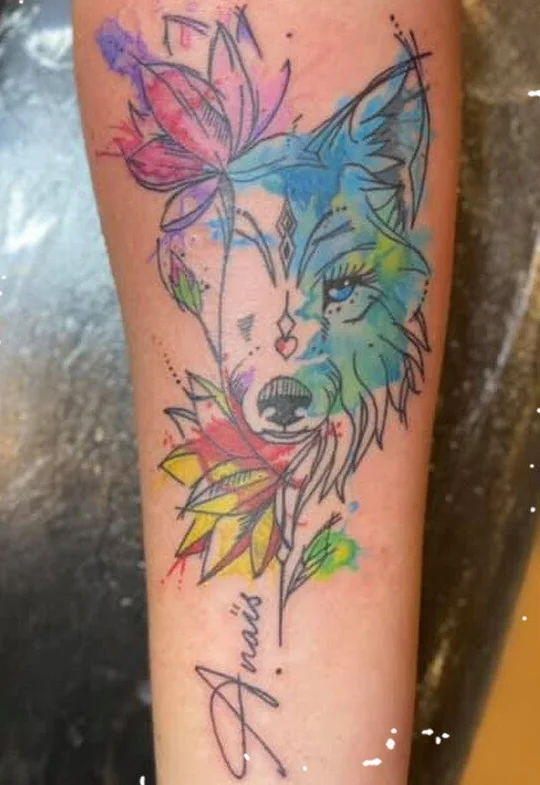
- Realisme
- Black & grey
- Portretten
- Bloemen
- Aquarel
- Lijnwerk
- Eigen ontwerp
Gezet, niet gekopieerd
Een greep uit het werk van de voorbije jaren. Van een pootafdruk van je hond tot een volledige mouw: elk stuk is eerst getekend voor die ene persoon.
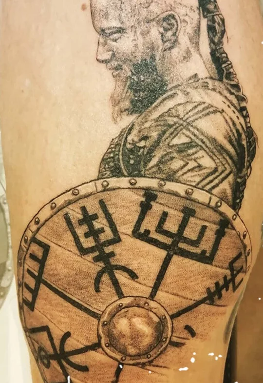
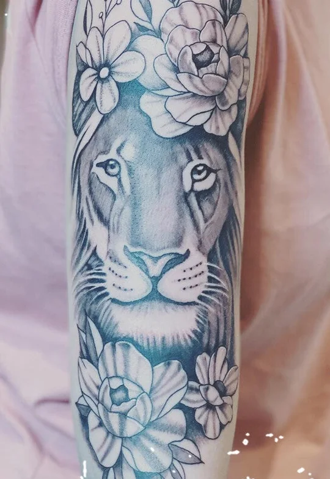
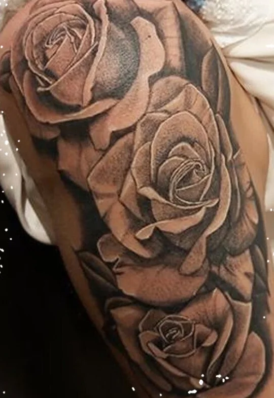
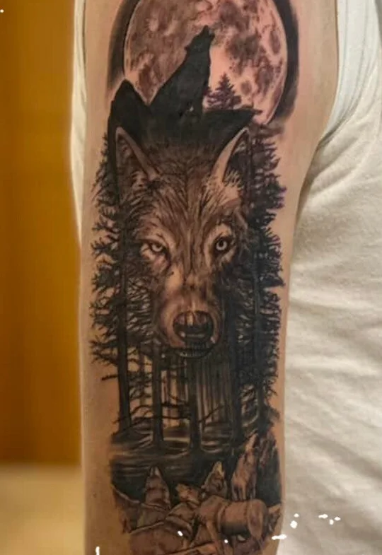
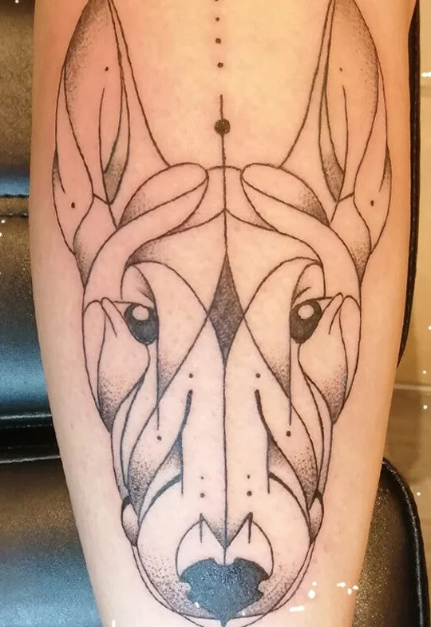
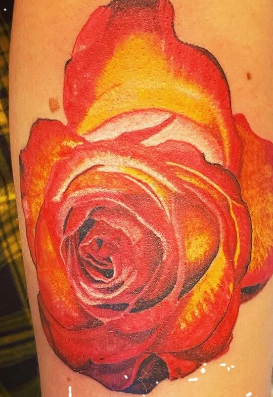
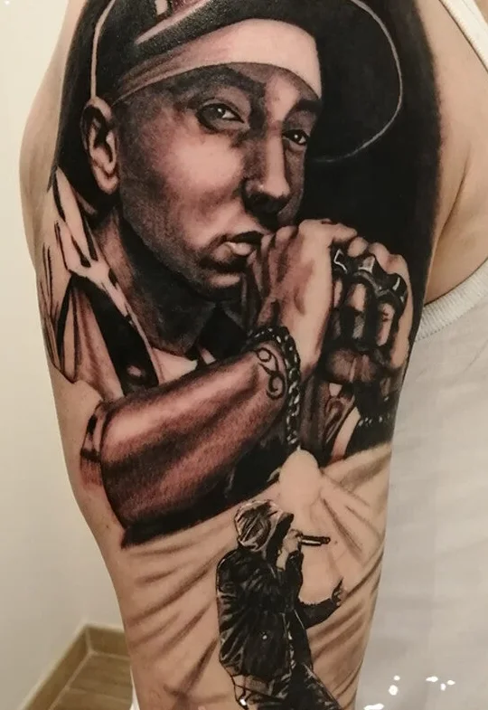
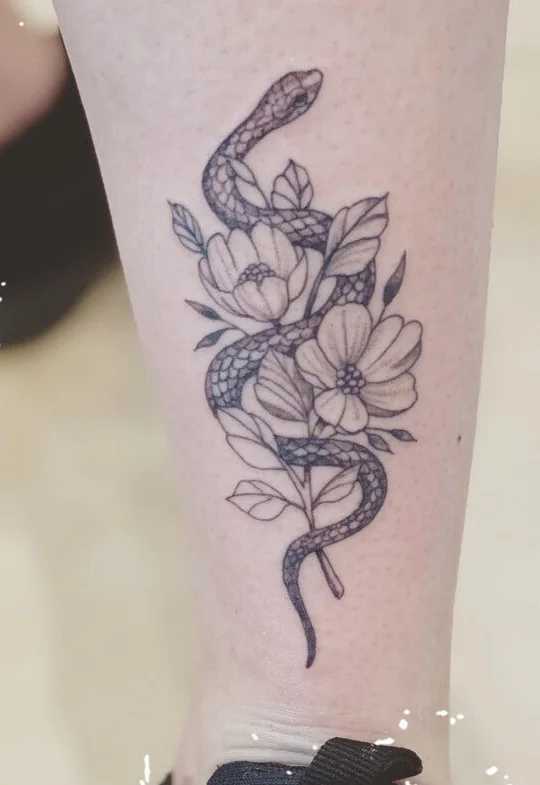
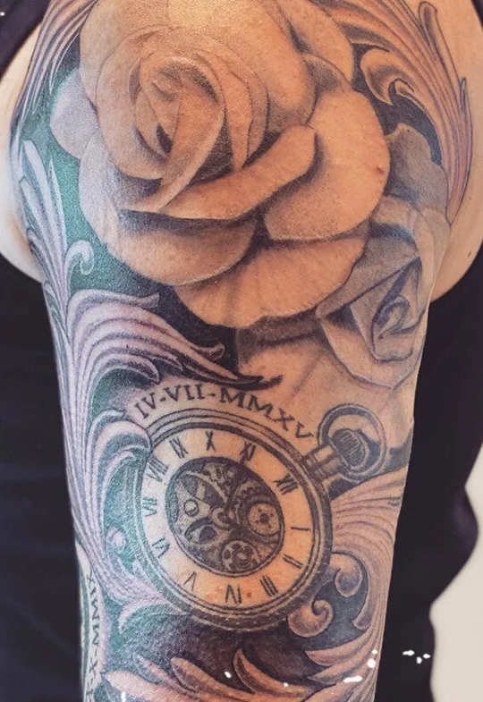
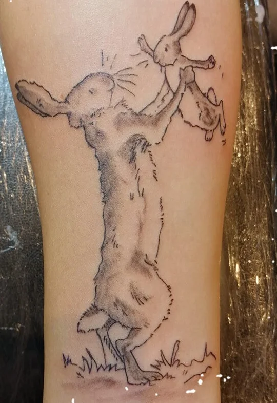
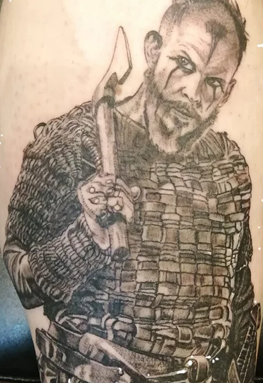
Portretten zijn waar het tekenwerk het meest telt.
Tekenaar, daarna tatoeëerder
Ik heb zowat elk medium geprobeerd dat er bestaat. De naald kwam pas later, en ze bleef.
Van kindsbeen aan tekenen
Potlood, verf, alles wat ik kon vastnemen. Talent helpt, maar je moet er evengoed voor blijven leren.
Airbrush en grafisch ontwerp
Airbrush aan de kunstacademie van Aalst, daarna avondschool grafisch ontwerp. De Wacom-tekentablet die ik toen kocht, gebruik ik vandaag nog altijd.
Concept artist
Ontwerpen voor props op festivals als Tomorrowland en voor pretparken als Walibi en Plopsaland. Daarnaast illustreerde ik kinderboekjes.
Een eigen studio
In 2016 leerde ik het vak als apprentice in een tattooshop. In oktober 2019 opende ik mijn eigen studio, waar ik je met plezier ontvang.
Van idee tot vel
Geen inloop, geen haast. Je komt op afspraak en we nemen de tijd die je tattoo nodig heeft.
Je idee
Stuur me een mailtje of bericht met wat je in gedachten hebt. Een foto, een schets of gewoon een paar woorden is genoeg.
Samen ontwerpen
Op de ontwerpafspraak tekenen we tot het klopt. De bijdrage daarvoor wordt verrekend als je de tattoo bij mij laat zetten.
De sessie
Rustig, op afspraak, in mijn studio. Draag kleren die vuil mogen worden, inkt gaat er niet meer uit.
Nazorg
Je krijgt uitleg mee naar huis. Na ongeveer een maand is je tattoo genezen, en je hebt garantie.
Voor je afspraak
- Je bent minstens 18. Vanaf 16 kan het met schriftelijke toestemming van je ouders, en uiteraard die van jezelf.
- Breng liever geen kleine kinderen mee, dan kunnen we ons allebei op je tattoo focussen.
- Iets verplaatsen of annuleren? Laat het minstens 24 uur op voorhand weten, dan behoud je je voorschot.
- Kom nuchter. Onder invloed van alcohol of drugs wordt er niet getatoeëerd.
Na je tattoo
- Folie eraf na 3 à 4 uur, spoelen met proper stromend water en droog deppen.
- Een dun laagje Bepanthen of tattoolotion, zodat de huid niet uitdroogt.
- Niet krabben aan de korstjes. Meestal vallen ze binnen 7 à 10 dagen af.
- Geen zon, zonnebank, zwembad of sauna tot alles genezen is. Daarna altijd SPF 50.
Iedereen die op Google een review achterliet, gaf de volle score. Benieuwd wat ze schreven?
Lees de reviews op GoogleZin in iets eigens?
Vrijstraat 23
9200 Appels
| Maandag | 15u tot 19u |
| Dinsdag | 15u tot 19u |
| Woensdag | Gesloten |
| Donderdag | 15u tot 19u |
| Vrijdag | 15u tot 19u |
| Zaterdag | 15u tot 19u |
| Zondag | Gesloten |
Enkel op afspraak, ook binnen deze uren.